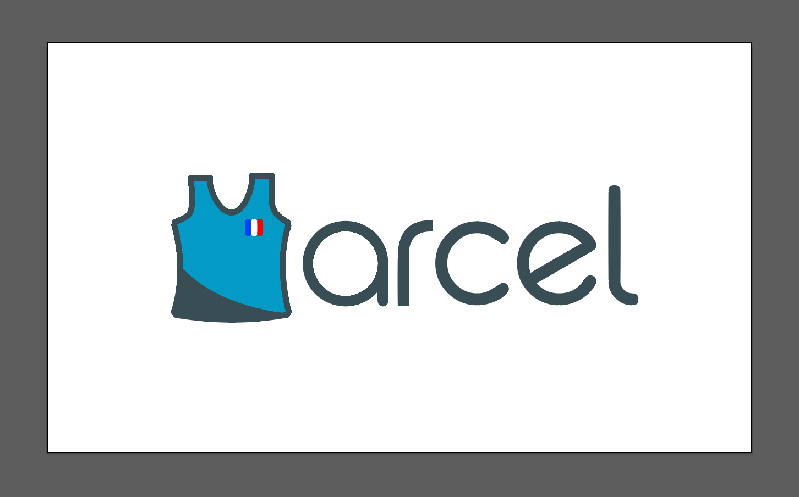
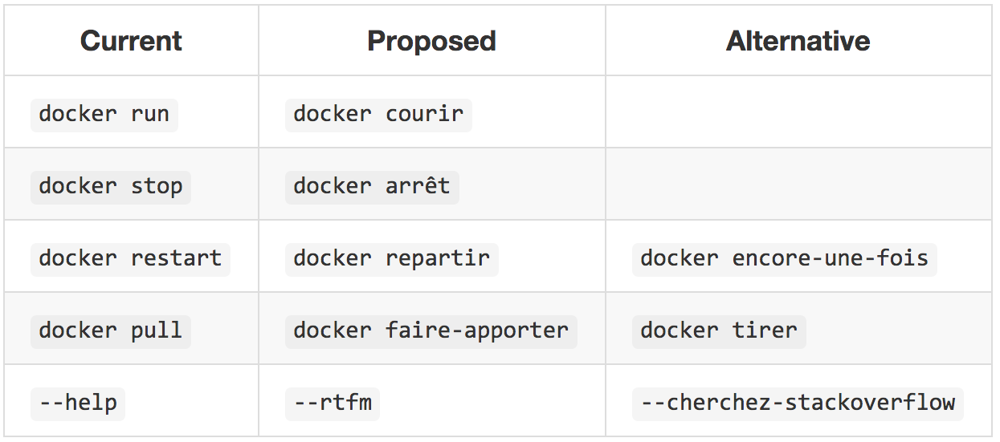
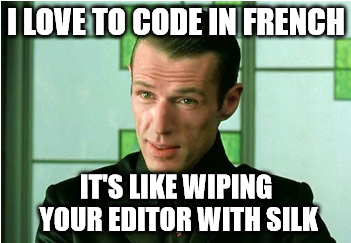
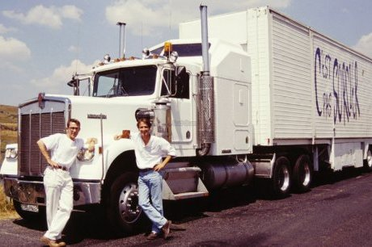
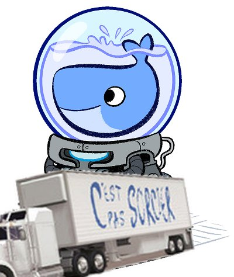
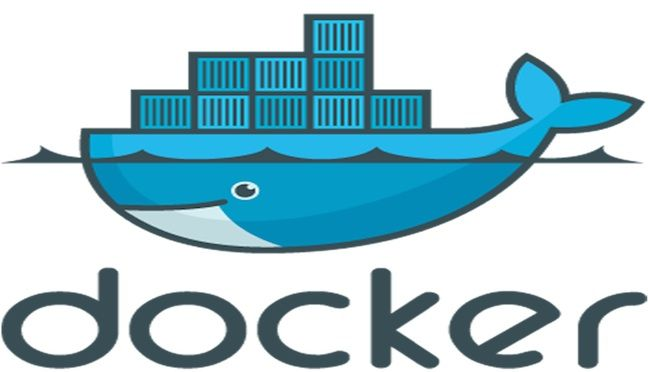
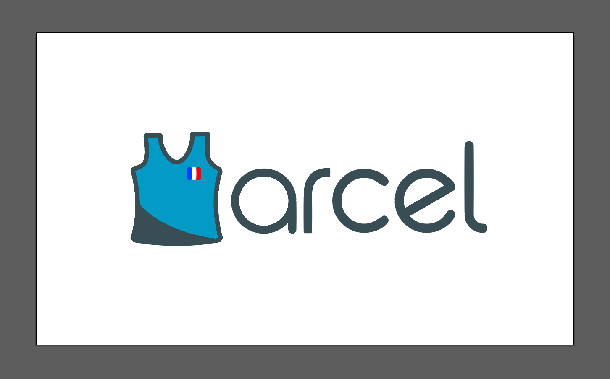
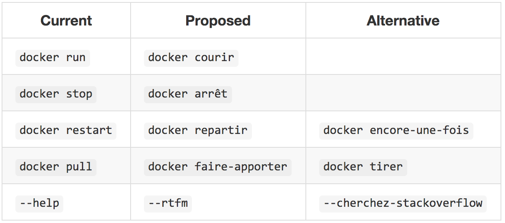
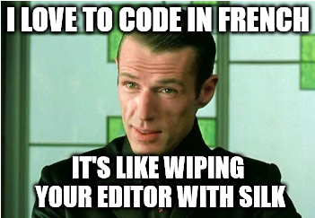
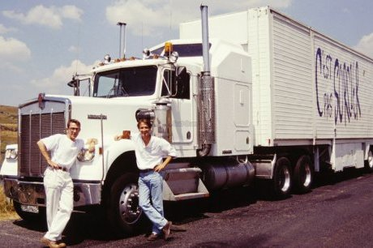
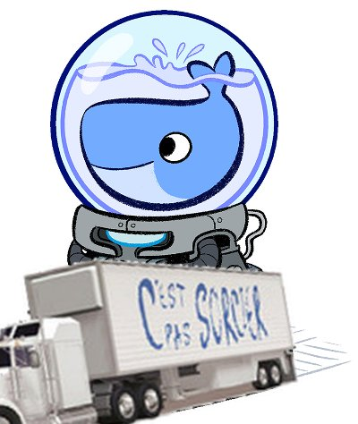
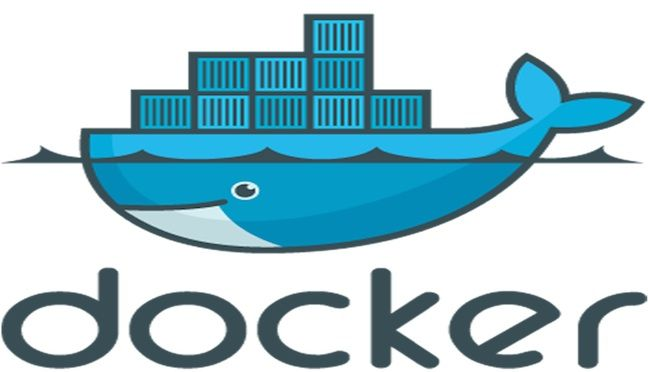
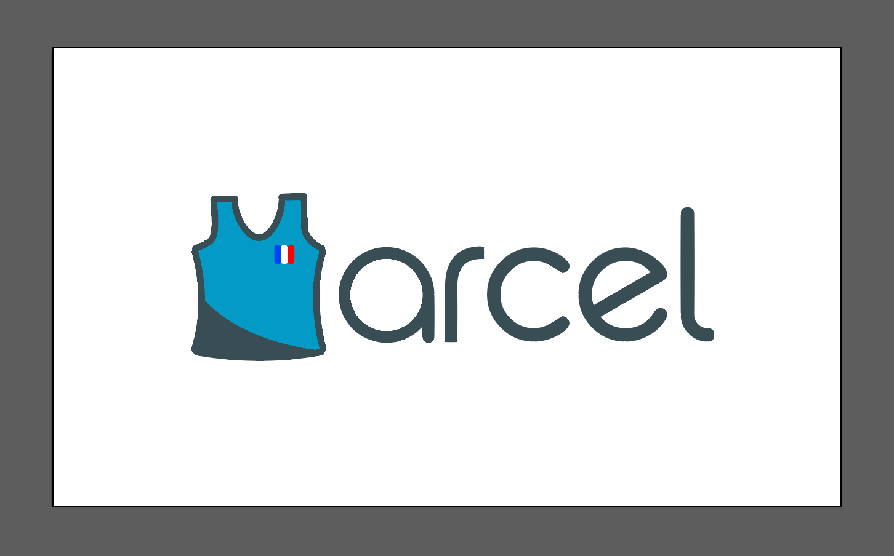
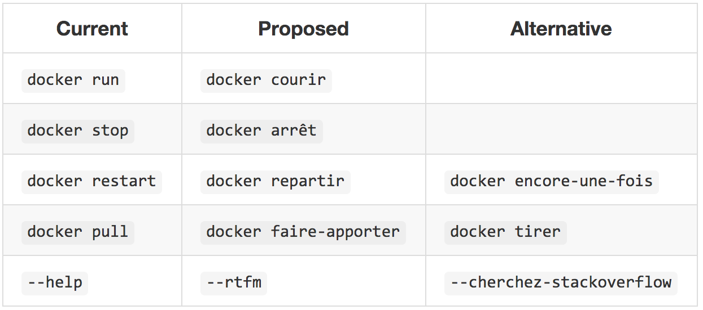
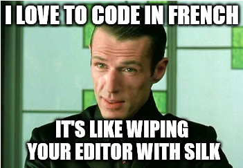
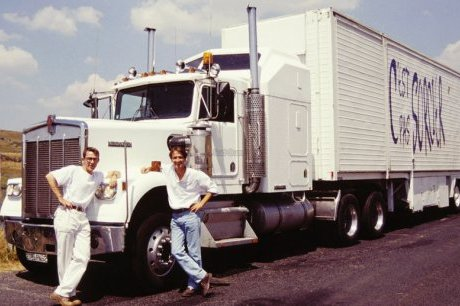
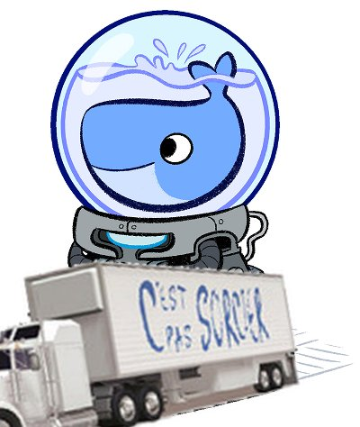
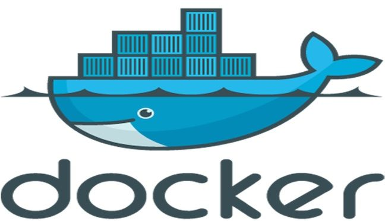
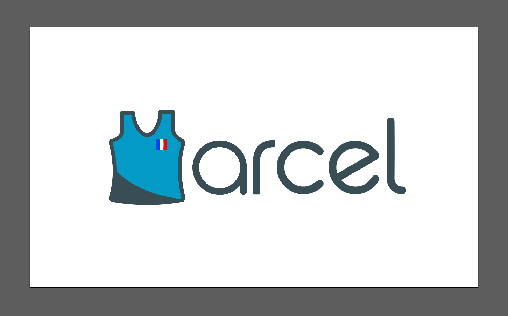
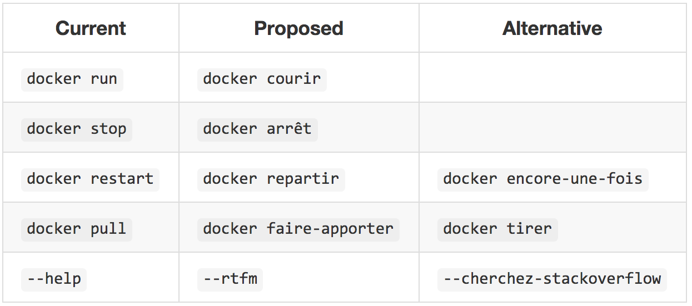
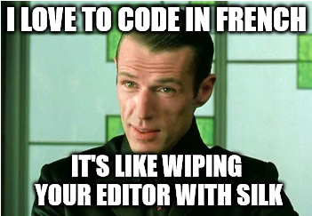
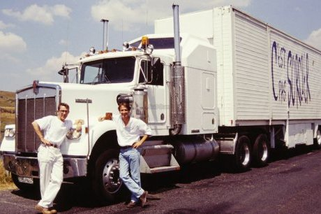
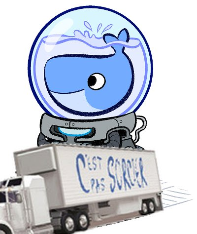
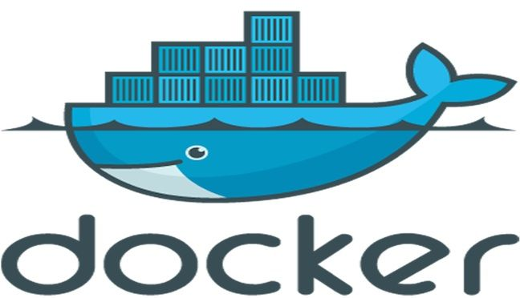
French government announced, as part of “digital sovereignty” effort, to consider building a fresh new 100% French operating system - yes, just like North Corea does.
Would be great if we still can run docker on this OS.
by ndeloof
This should be coded in LEM, some kind of Cobol with a french syntax from the french manufacturer Sfena
http://www.silicium.org/oldskool/france/sfena5_20.htm
by k3ck3c
@stevedesmond-ca I have created, per your request, a repo for marcel, with a tiny (but kinda fonctional in a broken way) wapper around docker: https://github.com/brouberol/marcel
Anyone, feel free to open PRs. I'll give write rights to every single person who either sends a PR or asks for it.
Let's change the world.
by brouberol
| Current | Proposed | Alternative |
|---|---|---|
docker run |
docker courir |
cours débardeur / démarre débardeur / chauffe marcel |
docker stop |
docker arrêt |
arrête débardeur |
docker restart |
docker repartir |
docker encore-une-fois |
docker pull |
docker faire-apporter |
docker tirer / déshabille |
docker push |
docker pousser |
pousse débardeur / pousse marcel |
--help |
--cherchez-stackoverflow |
|
--rtfm |
--llpm |
--faq-site-du-zero |
docker ps |
marcel socialiste |
|
docker suspend |
marcel grève |
|
RMI Marcel |
RSA Marcel |
|
docker-compose |
marcel-et-son-orchestre |
|